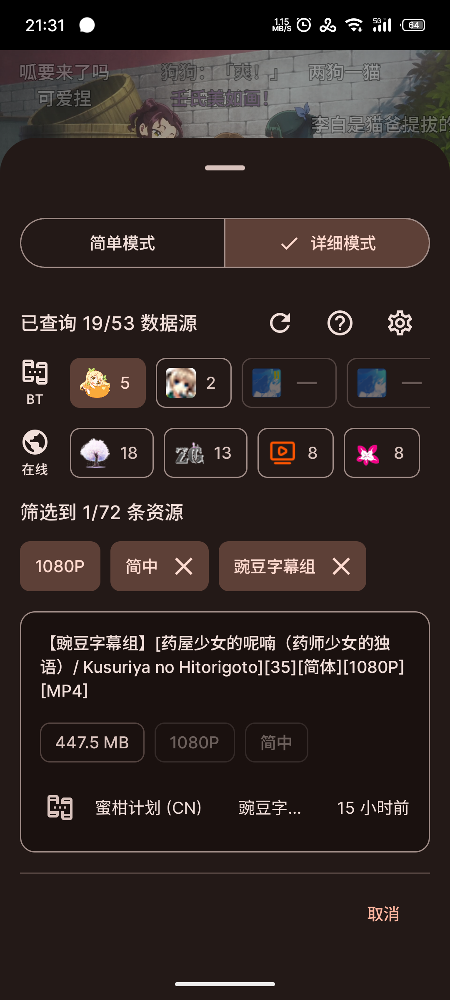
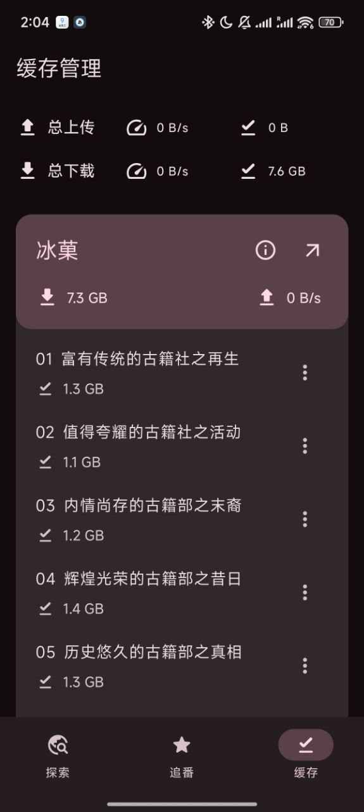

Animeko 藏得最深的 5 个冷门功能，用了半年才发现
你以为 Animeko 只是个聚合追番播放器？其实它还藏着自建库接入、云端兜底、弹幕正则过滤等 5 个官方几乎不宣传的实用技巧，翻到底朝天才挖出来。
你以为 Animeko 就是个 BT 源加在线源聚合的追番播放器？它的官网把核心功能列得清清楚楚，但藏在设置里的远不止于此。装好、选源、点播放——没错，这是 90% 的人对它的全部使用方式。
但我把设置翻了个底朝天、把版本更新日志从 v5.0 一路追到 v5.5，还去源码仓库和文档里扒了几个没写进更新日志的冷门功能，发现它还藏着好几个"官方几乎不宣传"的功能——有些是专门给折腾党留的后门，有些是版本迭代时悄悄加进去的彩蛋。这篇就把我挖出来的 5 个冷门功能逐个拆解，看完你就知道自己到底只用了 Animeko 的几成功力。
1. 自己的 Jellyfin/Emby 媒体库直接接进来
这个功能藏得真深——在播放源设置里，往下拉到底部才看得到「自定义数据源」入口。进去之后你会发现 Animeko 支持直接对接 Jellyfin 和 Emby 自建库。
怎么操作？填一下你的媒体服务器地址、用户名密码，Animeko 就会把你服务器里的番剧直接拉进它的搜索和播放列表里。也就是说，你自己搭建的媒体库，现在可以用 Animeko 的播放器来播——带弹幕、带进度同步、带自动选字幕。
这个功能谁用得上？自己搭了 Jellyfin/Emby、又觉得原生播放器弹幕和体验不够好的人。如果你没有自建媒体服务器，可以直接跳过，这个对你来说完全没用。

2. BT 源不稳定？PikPak 云端兜底
v5.5.1 版本悄悄加了一个备选方案：PikPak 云端离线下载。
场景很明确：你点播放一集 BT 源的番，发现做种数太少、速度上不去、甚至连不上——这时候 Animeko 会提示你要不要把这集先扔到 PikPak 云端下好，再从云端播。相当于给 BT 路不通的时候备了一条兜底通道，不用你自己手动开浏览器去找 PikPak 链接。
开关在播放设置里，默认是关闭的，需要你手动打开。打开之后也不是所有 BT 源都会触发，只有当本地 BT 播放确实失败时才会自动提示。适合那些追的番比较冷、BT 做种常年不足的人，追热门番的话这个功能大概率派不上用场。
3. 弹幕可以用正则表达式精准过滤
大多数人只知道弹幕能关、能调透明度——但 Animeko 的弹幕过滤系统远不止于此。
在弹幕设置里找到「高级过滤」，有一个正则表达式过滤的开关。打开后你可以写正则来批量屏蔽弹幕，比如：
/哈哈哈哈哈+/屏蔽刷哈的弹幕/^.{1,2}$/屏蔽一两个字的短句弹幕/[Aa][Nn][Ii][Mm][Ee][Kk][Oo]/屏蔽带特定关键词的
更狠的是，Animeko 还有一个云过滤选项——打开后会自动同步一份社区维护的弹幕黑名单，不用自己写正则就能屏蔽掉常见的刷屏和垃圾弹幕。
这个功能对弹幕敏感党来说是救星，但正则写不好容易误杀正常弹幕。建议先开云过滤用着，真有特殊需求了再自己写正则。
4. 同一集可以缓存多条不同的源，互不覆盖
你有没有过这种情况：缓存了一集 720p 的 B 源，后来又看到了 1080p 的 A 源——换源重缓存的话，之前那个会被覆盖掉吗？
不会。 Animeko 的缓存是「集 + 源」两级键存的，不同源的缓存互相独立、互不覆盖。也就是说，你可以同时缓存同一集的 BT 源版和在线源版，离线播放时可以切换。
但这里有个容易踩的坑：缓存完成后要去缓存详情里看一眼「弹幕已缓存」的状态——默认开启的自动缓存弹幕功能有时候会因为源的不同导致弹幕拉取失败，这时候离线播就没弹幕了。手动检查一下、必要时重新缓存一次弹幕，比事后断网才发现强。

5. 设置可以导入导出，换机搬家一键搞定
功能矩阵里提了一嘴但没展开：设置导入导出。
入口在设置页面最底部的「关于」区域，点一下就能导出一个 JSON 配置文件——里面包含你的数据源配置、弹幕偏好、缓存策略、播放设置、甚至连你选的主题颜色都在。换机、重装（记得先去Animeko下载拿最新版）、给朋友推荐 Animeko 的时候，把这个 JSON 发过去导入一遍，所有个性化设置瞬间复制到位，不用一项项重新调。
这个功能看起来不大，但换过三次以上设备的人就知道它有多省事。我从手机换到平板、再从平板换到 Windows 桌面端，就是靠导出 JSON 避免了每次半小时的设置时间。
最后提一个别踩的坑
缓存引擎在 v5.3.1 做过一次完整重构——升级到这个版本或更高之前，你之前缓存的所有内容会全部失效、需要重新缓存。官方更新日志里提了一句但没加粗，我就是升级后发现离线播放列表全空了才看到的。
如果你现在还停留在 v5.2.x，升级之前先把重要的缓存内容导出或者手动标记一下，免得升级完一阵茫然。
写在最后
Animeko 的开发团队走的是典型的"功能先堆上去、文档慢慢补"的路子——版本更新日志写得比官方文档详细多了。那些冷门功能不会弹窗提醒你去用，只会安静地躺在设置里等你自己翻。
把它用透，从翻设置开始。想跟着源码一起挖的话，GitHub、Gitee、GitCode 上都能找到完整的仓库，跟着一起看更过瘾。